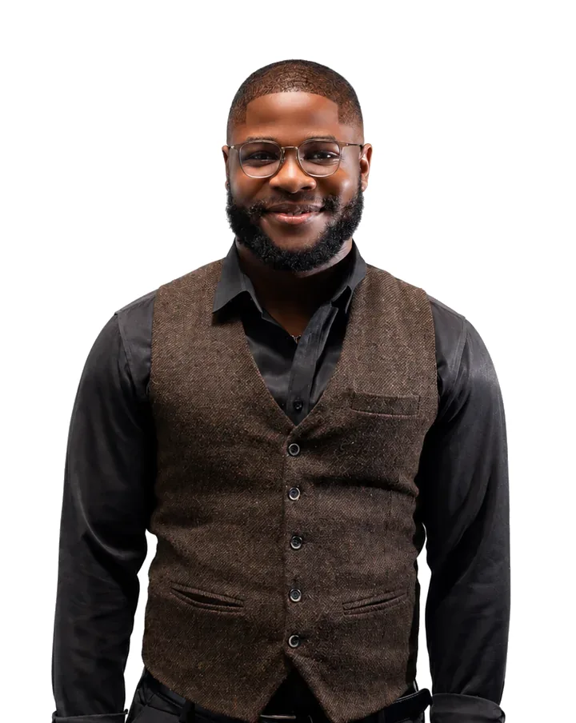

The stack I've worked through, newest layer first
-
Identity and security
2025 to now
I run identity, access and security for a client's Azure and Microsoft 365 estate: identity governance for 80–100 users and devices, Conditional Access, privileged access, device compliance, vulnerability management and ISO 27001 support.
Entra ID, Conditional Access, PIM, MFA, Microsoft Defender, Intune, Key Vault, Zero Trust, ISO 27001
-
Infrastructure as code
2023 to now
Terraform for repeatable, policy-compliant deployments at work and on my own servers, with cloud-init for first boot and Ansible for configuration. CI/CD pipelines with security checks at key stages.
Terraform, Ansible, cloud-init, Docker, GitHub Actions, Azure DevOps, GitLab CI/CD, PowerShell, Azure CLI
-
Cloud
2023 to now
Designed and ran Azure infrastructure for enterprise clients, led a fintech application's migration to AWS end to end, and designed my company's AWS multi-account governance.
Azure, Azure Landing Zones, Azure Functions, App Service, Azure SQL Managed Instance, Azure Container Apps, Azure Monitor, AWS Organizations, Microsoft 365
-
Servers
2019 to now
Managed the Windows Server environments that hosted the APIs I built. Today I run my own Ubuntu fleet on Hetzner and OVHcloud, with PostgreSQL, Neo4j and a vector database.
Windows Server, Active Directory, Ubuntu Linux, Hetzner Cloud, OVHcloud, Nginx
-
Code
2019 to 2023
Four years building cross-platform REST APIs in C# and ASP.NET Core, with data models in Entity Framework Core on SQL Server and PostgreSQL.
C#, ASP.NET Core, .NET, Entity Framework Core, SQL Server, PostgreSQL
Read it from the bottom up. Right now I'm sitting Microsoft's SC-500 and adding a WireGuard mesh and cross-provider security monitoring to my self-hosted platform.
Experience
-
2023 to now
RubidiumData
Estonia, remote
IT managed services provider delivering cloud infrastructure, security and Microsoft 365 services to clients across Europe.
Cloud Security Engineer 2025 to now
- Primary engineer and third-line escalation point for a UK and Swiss advisory firm's Azure platform (5–6 subscriptions) and Microsoft 365 environment.
- Cut phishing click rates from ~40% to 10–15% through repeated attack simulations and security awareness training.
- Built an automated vulnerability alerting system that sends daily critical and high CVE reports per device to the person who owns it, helping cut the device exposure score from 60–70 to 24 at 99.3% less than the licensed alternative.
Show 6 moreShow less
- Enforce identity governance for 80–100 users and devices on Zero Trust principles: provisioning, role-based access, Conditional Access, MFA, privileged access and secure deprovisioning.
- Enforce device compliance baselines across Windows, macOS, iOS and Android.
- Reduced high-severity alerts and raised compliance scores by hardening the estate with Microsoft Defender.
- Delivered ISO 27001 certification support by implementing security controls and producing governance documentation and compliance reporting.
- Designed the company's own AWS multi-account governance, with separated accounts, least-privilege admin roles, cost tagging and single sign-on.
- Wrote the runbooks and operational documentation that keep operations consistent and handovers clean.
Cloud Engineer 2023 to 2025
- Designed, deployed and maintained secure, scalable Azure infrastructure across multiple projects for an enterprise client.
- Led the migration of a fintech application to AWS end to end: assessment, target architecture, cutover and stakeholder coordination.
- Reduced the team's cloud costs by 20% through resource optimisation.
Show 3 moreShow less
- Implemented infrastructure as code with Terraform for repeatable, policy-compliant deployments.
- Deployed and operated containerised workloads on Azure Container Apps, owning scaling and troubleshooting.
- Built CI/CD pipelines in GitHub Actions and Azure DevOps with security checks at key stages.
-
2023
Cloud Infrastructure Engineer Intern
UK and Swiss advisory firm, remote
- Designed and implemented scalable Azure architectures with failover, achieving 99.99% uptime.
-
2019 to 2023
Backend Engineer (.NET)
Credevnet Technologies
- Developed cross-platform REST APIs in C# and ASP.NET Core, with Entity Framework Core, SQL Server and PostgreSQL.
- Managed the team's Windows Server hosting environments and shaped architecture in agile Scrum teams.
Projects
-
A self-hosted data platform across two providers
A Linux fleet on Hetzner and OVHcloud running PostgreSQL, a vector database and Neo4j. Terraform creates the servers, cloud-init handles first boot and Ansible configures the OS, so the whole platform can be rebuilt from code. Next: a WireGuard mesh, hardening and cross-provider security monitoring.
Terraform, Ansible, cloud-init, Ubuntu, PostgreSQL, Neo4j
GitHub -
Containerised .NET delivery on Azure
Provisions Azure Kubernetes Service and a container registry with Terraform, then builds and deploys a containerised ASP.NET Core API end to end.
Terraform, AKS, Azure Container Registry, Docker, .NET
GitHub -
Terraform on Azure, from network to application
A multi-week HashiCorp User Group programme: VNets, NSGs and cloud-init VMs, reusable modules with remote state, and a two-tier application with PostgreSQL in a private subnet.
Terraform, Azure networking, Azure Storage, PostgreSQL
Certifications
- Azure Solutions Architect ExpertAZ-305
- Azure Security Engineer AssociateAZ-500
- Azure Administrator AssociateAZ-104
- HashiCorp Certified: Terraform Associate004
- Fortinet Certified Associate CybersecurityFCA
Previously held AWS Certified Solutions Architect, Associate. Professional Diploma in IT Infrastructure Management, NIIT.
Teaching
I mentor at Tech Experts Academy, guiding people into cloud and security roles. Before that, I was an AWS re/Start instructor with Coding Black Females, teaching cohorts of up to 25 engineers.
Contact

Happy to talk cloud, infrastructure, security or mentoring.